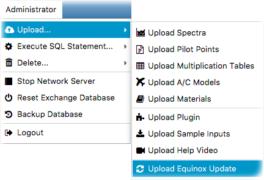

Administrator privilages are required in order to upload container updates. For this, you'll have to login as administrator
from - Administrator --> Login as Adminisitrator
. This will enable the adminsitrator menu items. Click on
- Upload --> Upload Container Update
as follows;
In the input panel, you will be requested to supply the installation archives for Windows, Linux and Mac operating systems.